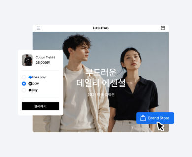

개발 전달 · 기존 소스 수정
기존 수정 목록
신규 시안에 맞춰 기존 홈페이지(wisa.co.kr) 소스도 고쳐야 하는 항목입니다. 기존 값은 2026-11-11 에 solution/cloud 와 서브페이지 7곳에서 1440 · 820 · 390 으로 확인했습니다.
한눈에 보기
창업 · 맞춤 패키지 · 푸터 도메인 아이콘 · 메인 쇼핑몰 타입 이미지 개선은 부분 개선 3건 탭에 있습니다.
이미 구현한 마케팅 페이지에 2차 전달 이후 더할 공통 수정(단계 탭 손가락 넘기기 · 단계 카드 사이 화살표)은 마케팅 공통 수정 탭에 있습니다.
미리보기를 누르면 해당 탭으로 이동합니다. 미리보기는 신규 시안 공통 파일(wisa.css)을 그대로 불러온 화면이라, 시안 값이 바뀌면 함께 바뀝니다.
신규 시안 코드는 공통 파일 assets/common/wisa.css · wisa.js 에 있습니다. 각 탭의 "시안 코드 위치"에서 찾을 수 있습니다.
미리보기
움직임 보기 · 신규 CTA (시안 공통 파일 그대로) · 빛 두 개가 문구 뒤에서 10초 · 13초 주기로 천천히 움직임
무엇이 바뀌나
기존 CTA 에도 같은 배경 빛 애니메이션(파란 빛 · 보라 빛 두 개)이 있습니다. 빛의 위치만 오른쪽 끝에서 문구 뒤 가운데로 옮겨, 타이틀 뒤에서 빛이 흐르게 합니다 (PC · 태블릿 · 모바일 모두).
빛 위치 (기존 → 신규)
| 구간 | 빛 | 기존 .rn-cta | 신규 .cta |
|---|---|---|---|
| PC · PC 최소 | 파란 빛 ::before | right 6% · top 2% | left calc(50% − 4vw) · top 12% |
보라 빛 ::after | right 2% · top 0 | left calc(50% + 12vw) · top 10% | |
| 태블릿 | 파란 빛 | right 2% · top 2% | left calc(50% − 4vw) · top 2% |
| 보라 빛 | right 0 · top 0 | left calc(50% + 12vw) · top 0 | |
| 모바일 | 파란 빛 | right −24% · top 0 | left calc(50% − 4vw) · top 0 |
| 보라 빛 | right −16% · top 0 | left calc(50% + 12vw) · top 0 |
390 기준 파란 빛 왼쪽 끝: 기존 94 → 신규 179 · 보라 빛: 기존 218 → 신규 242 (빛 크기는 그대로라 오른쪽으로 조금 밀려 문구 뒤에 걸침).
그대로 두는 것
| 항목 | 값 (기존 = 신규) |
|---|---|
| 빛 크기 | 파란 min(620px, 46vw) × min(380px, 28vw) · 보라 min(380px, 28vw) × min(240px, 18vw) · 태블릿 · 모바일 vw 값도 같음 |
| 빛 색 · 흐림 | radial-gradient 파란 · 보라 · blur 60 / 55 (태블릿 50 · 모바일 40) |
| 움직임 | 파란 10초 · 보라 13초 · ease-in-out · 무한 반복 · alternate (키프레임 같음) |
| 동작 줄이기 | prefers-reduced-motion: reduce 이면 멈춤 |
| 타이틀 | 40 · 태블릿 36 (모바일은 모바일 타이틀 항목에서 28 → 26) |
| 버튼 | 검정 · 18px · 12 × 20 · 모서리 8 · 호버 Primary 600 (모바일 16px · 높이 42) |
바꿀 코드
기존 right 값을 지우고(auto) left 로 바꿉니다. 모바일은 left 가 이어져 적용되므로 따로 고칠 것이 없습니다 (기존 모바일 right 는 left · 폭이 정해져 있어 무시됨).
/* PC · PC 최소 */
.rn-cta::before { right: auto; left: calc(50% - 4vw); top: 12%; }
.rn-cta::after { right: auto; left: calc(50% + 12vw); top: 10%; }
/* 태블릿 */
@media (min-width: 768px) and (max-width: 1023px) {
.rn-cta::before { right: auto; left: calc(50% - 4vw); top: 2%; }
.rn-cta::after { right: auto; left: calc(50% + 12vw); top: 0; }
}
/* 모바일: 기존 top 0 · 크기 그대로, 위 left 값이 이어져 적용됨 */
@media (max-width: 767px) {
.rn-cta::before, .rn-cta::after { right: auto; }
}시안 코드 위치: assets/common/wisa.css @region cta (.cta::before · .cta::after · ctaGlow1 · ctaGlow2).
미리보기
움직임 보기 · 다른 탭을 누르면 흰 알약만 미끄러지고 글자는 제자리 · 처음 열릴 때 선택 점에서 연한 블루 링이 3번 퍼짐 · 마우스를 올리면 검정 + 굵게
크기
크기는 기존 .rn-cl-tabs 그대로 둡니다 — 회색 박스 높이 44 · 안쪽 6 / 탭 높이 32 · 패딩 6/14 (모바일 좌우 10) · 글자 13/20 · 모서리 99.
상태
| 상태 | 기존 | 신규 |
|---|---|---|
| 기본 | Gray 500 글자 · 굵기 500 · 배경 없음 (같음) | |
| 호버 | 검정 글자 · 굵기 600 (같음 · 굵어져도 탭 폭은 그대로) | |
| 선택 | 흰 알약 배경 · 검정 글자 · 굵기 600 · 그림자 0 0 2px rgba(0,0,0,.1) · 왼쪽 점 8px (같음) | |
| 선택 표시 이동 (다른 탭 클릭) | 선택된 탭이 통째로 늘었다 줄어듦 (view-transition) | 흰 알약만 옆 탭으로 미끄러지고 글자는 제자리 · 0.28초 · cubic-bezier(.22, 1, .36, 1) · 다 움직인 뒤(0.3초) 페이지 이동 |
| 선택 점 | 고정 | 페이지에 들어오면 연한 블루 링이 퍼지며 사라짐 3번 · 0.6초 뒤 시작 · 1.6초 · ease-out · 크기 1 → 2.6배 · 투명도 .45 → 0 · 이후 멈춤 |
| 동작 줄이기 | — | 알약 이동 · 점 퍼짐 없음, 클릭하면 바로 페이지 이동 |
바꿀 코드
/* 선택 점 퍼짐 (점 = 8px Primary 600) */
.rn-cl-tab.on .dot { position: relative; }
.rn-cl-tab.on .dot::after { content: ""; position: absolute; inset: 0; border-radius: 50%; background: var(--primary-600); opacity: 0; animation: tabDotPulse 1.6s ease-out .6s 3; }
@keyframes tabDotPulse { 0% { transform: scale(1); opacity: .45; } 100% { transform: scale(2.6); opacity: 0; } }
/* 흰 알약 이동: 알약을 탭 묶음의 ::before 로 분리하고, 스크립트가 선택 탭 위치 · 폭을 변수로 넣음 */
.rn-cl-tabs { position: relative; isolation: isolate; }
.rn-cl-tabs.ind::before { content: ""; position: absolute; z-index: -1; left: 0; top: var(--iy, 6px); width: var(--iw, 0); height: var(--ih, 32px); border-radius: 99px; background: var(--white); box-shadow: 0 0 2px rgba(0,0,0,.1); transform: translateX(var(--ix, 0)); }
.rn-cl-tabs.ind.ready::before { transition: transform .28s cubic-bezier(.22, 1, .36, 1), width .28s cubic-bezier(.22, 1, .36, 1); }
.rn-cl-tabs.ind .rn-cl-tab.on { background: none; filter: none; }
@media (prefers-reduced-motion: reduce) {
.rn-cl-tabs.ind.ready::before { transition: none; }
.rn-cl-tab.on .dot::after { animation: none; }
}선택 점은 기존에 <img src="tab-dot.svg"> 이라 퍼짐 효과를 넣으려면 <i class="dot"> 같은 요소로 바꿔야 합니다. 알약 이동 스크립트(선택 탭의 위치 · 폭을 --ix · --iy · --iw · --ih 로 넣고, 클릭 시 알약을 옮긴 뒤 0.3초 후 이동)는 시안 wisa.js 의 tab-ind 를 그대로 옮기면 됩니다.
시안 코드 위치: assets/common/wisa.css tab-page · tab-ind (patch-173) · hero-gap (patch-505) · tab-dot-pulse (patch-321) · tab-hover (patch-365) / wisa.js tab-ind.
미리보기
크기 보기 · 모바일(≤767) 영역 타이틀 28 → 26px · 같은 문장을 두 크기로 나란히
무엇이 바뀌나
모바일(≤767)에서 콘텐츠 영역 타이틀을 28 → 26px 로 2px 줄입니다. 영역 타이틀 h2 와 CTA 타이틀이 대상이고, 히어로 h1(30)은 그대로입니다.
| 구간 | 영역 타이틀 | CTA 타이틀 |
|---|---|---|
| PC | 34 · CTA 40 (변경 없음) | |
| 태블릿 | 36 · CTA 36 (변경 없음) | |
| 모바일 | 28 → 26 | 28 → 26 |
고칠 페이지
기존 홈페이지는 페이지마다 모바일 타이틀 크기가 다릅니다. 28 인 페이지만 고치면 됩니다.
| 페이지 | 지금 모바일 타이틀 | 할 일 |
|---|---|---|
| solution/cloud · enterprise · brand (솔루션) | 28 | 26 으로 |
| marketing/consulting · adTech · build/buildService (마케팅 · 구축) | 26 | 그대로 |
| 그 밖의 서브페이지 | 같은 기준으로 확인 · 28 이면 26 으로 | |
바꿀 코드
@media (max-width: 767px) {
.rn-cl-h2, .rn-mt-h2, .rn-ent-h2, .rn-cta-copy h2 { font-size: 26px; }
}클래스 이름은 확인한 페이지 기준입니다. 같은 역할의 타이틀이 다른 클래스를 쓰면 함께 넣습니다. 시안 코드 위치: assets/common/wisa.css title-mo (patch-197).
미리보기
상태 보기 · 마우스를 올리면 원 바탕 연한 블루 + 화살표 Primary 700 · 맨 위 · 맨 아래에서는 해당 버튼 비활성 · 검정 배경 페이지는 .dark
무엇이 바뀌나
기존 오른쪽 아래 로켓 모양 탑버튼(맨 위로 1개)을 신규 시안의 맨 위 · 맨 아래 이동 버튼으로 바꿉니다. 흰 알약 안에 위 · 아래 화살표 버튼 2개가 세로로 있고, 화면 오른쪽 가운데에 떠 있습니다.
기존 → 신규
| 항목 | 기존 #scroll_top | 신규 .page-nav |
|---|---|---|
| 버튼 | 맨 위로 1개 · 로켓 그림(scroll_top2.svg · 호버 scroll_top_hover2.svg) | 맨 위로 · 맨 아래로 2개 · 화살표 아이콘 18 (선 1.8) · 사이 구분선 16 × 1 Gray 200 |
| 모양 | 50 × 72 그림 (모바일 45 × 64) | 흰 알약 · 안쪽 여백 4 · 버튼 원 36 (모바일 여백 3 · 버튼 32) · 테두리 1 Gray 200 + 그림자 0 8 24 rgba(16,24,40,.1) |
| 위치 PC | 오른쪽 80 · 아래 75 (상담 버튼 위) | 오른쪽 50 · 세로 가운데 (top 50% · translateY(−50%)) |
| 위치 태블릿 | 오른쪽 60 · 아래 75 | 오른쪽 30 · 세로 가운데 |
| 위치 모바일 | 오른쪽 17 · 아래 70 | 오른쪽 14 · 세로 가운데 |
| 나타남 | 슬라이드 인 · 아웃 애니메이션 | 200px 넘게 스크롤하면 서서히 나타남 (opacity 0.3초) |
| 상태 | 호버 = 그림 교체 | 호버 = 원 바탕 #f5faff · 화살표 Primary 700 / 맨 위에서는 위 버튼, 맨 아래에서는 아래 버튼 비활성(Gray 300) |
| 숨김 | - | 상담 창 · 모바일 메뉴가 열리면 숨김 |
| 다크 | - | 검정 배경 페이지(엔터프라이즈 등)는 .page-nav.dark · 바탕 Gray 900 · 테두리 Gray 700 · 화살표 Gray 300 · 호버 바탕 Gray 800 + 흰 화살표 · 비활성 Gray 600 · 구분선 Gray 700 |
바꿀 코드
기존 #scroll_top 마크업 · 스타일 · 스크립트를 지우고 아래로 바꿉니다.
<nav class="page-nav" aria-label="페이지 이동">
<button type="button" data-go="top" aria-label="맨 위로"><svg width="18" height="18" viewBox="0 0 18 18" fill="none" aria-hidden="true"><path d="M4.5 11.25 9 6.75l4.5 4.5" stroke="currentColor" stroke-width="1.8" stroke-linecap="round" stroke-linejoin="round"/></svg></button>
<i></i>
<button type="button" data-go="bottom" aria-label="맨 아래로"><svg width="18" height="18" viewBox="0 0 18 18" fill="none" aria-hidden="true"><path d="M4.5 6.75 9 11.25l4.5-4.5" stroke="currentColor" stroke-width="1.8" stroke-linecap="round" stroke-linejoin="round"/></svg></button>
</nav>
.page-nav { position: fixed; right: 50px; top: 50%; z-index: 55; display: flex; flex-direction: column; align-items: center; padding: 4px; border-radius: 999px; background: var(--white); box-shadow: 0 0 0 1px var(--gray-200), 0 8px 24px rgba(16,24,40,.1); transform: translateY(-50%); opacity: 0; visibility: hidden; transition: opacity .3s, visibility 0s .3s; }
.page-nav.on { opacity: 1; visibility: visible; transition: opacity .3s; }
.page-nav button { display: grid; place-items: center; width: 36px; height: 36px; padding: 0; border: 0; border-radius: 50%; background: none; color: var(--gray-700); cursor: pointer; transition: background .2s, color .2s; }
.page-nav button:hover { background: #f5faff; color: var(--primary-700); }
.page-nav button:disabled { color: var(--gray-300); cursor: default; background: none; }
.page-nav i { width: 16px; height: 1px; margin: 2px 0; background: var(--gray-200); }
.consult-open .page-nav, .mo-menu-open .page-nav { opacity: 0; visibility: hidden; }
/* 검정 배경 페이지(엔터프라이즈 등): <nav class="page-nav dark"> */
.page-nav.dark { background: var(--gray-900); box-shadow: 0 0 0 1px var(--gray-700), 0 8px 24px rgba(0,0,0,.4); }
.page-nav.dark button { color: var(--gray-300); }
.page-nav.dark button:hover { background: var(--gray-800); color: var(--white); }
.page-nav.dark button:disabled { color: var(--gray-600); background: none; }
.page-nav.dark i { background: var(--gray-700); }
@media (min-width: 768px) and (max-width: 1023px) { .page-nav { right: 30px; } }
@media (max-width: 767px) { .page-nav { right: 14px; padding: 3px; } .page-nav button { width: 32px; height: 32px; } }
/* 스크립트: 200px 넘게 스크롤하면 표시 · 끝에서는 해당 버튼 비활성 · 누르면 맨 위 / 맨 아래로 */
const pnav = document.querySelector('.page-nav');
if (pnav) {
const [bUp, bDn] = pnav.querySelectorAll('button');
const reduced = matchMedia('(prefers-reduced-motion: reduce)').matches;
const upd = () => { const y = scrollY, max = document.documentElement.scrollHeight - innerHeight; pnav.classList.toggle('on', y > 200); bUp.disabled = y < 4; bDn.disabled = y > max - 4; };
pnav.addEventListener('click', e => { const b = e.target.closest('[data-go]'); if (!b) return; scrollTo({ top: b.dataset.go === 'top' ? 0 : document.documentElement.scrollHeight, behavior: reduced ? 'auto' : 'smooth' }); });
addEventListener('scroll', upd, { passive: true }); addEventListener('resize', upd); upd();
}.consult-open · .mo-menu-open 은 시안에서 상담 창 · 모바일 메뉴가 열릴 때 body 에 붙는 클래스입니다. 기존 홈페이지의 해당 상태 클래스로 바꿔 씁니다.
시안 코드 위치: assets/common/wisa.css 맨 아래 "우측 가운데 플로팅" (.page-nav) / 각 페이지 HTML @region page-nav 마크업 · 스크립트 "우측 플로팅".
2차 전달(2026.11.16) 이후 바뀐 내용입니다. 이미 구현한 마케팅 페이지(GEO · GEO 요금제 · 온사이트 · CRM · 리포트 · 공식채널운영 · 상품DB 연동 · 버티컬커머스 · 매체 광고 · 라이선스 비교)는 페이지를 새로 받지 않고 아래 2가지만 고치면 됩니다.
한눈에 보기
| # | 항목 | 바뀌는 것 | 대상 페이지 | 시안 코드 위치 |
|---|---|---|---|---|
| 1 | 단계 탭 손가락 넘기기 | 태블릿 · 모바일에서 단계 탭 화면을 옆으로 밀면 이전 · 다음 탭 | 온사이트 · CRM · 리포트 (+ 호스팅 6) | wisa.js @region jt-swipe |
| 2 | 단계 카드 사이 화살표 | 원 안 화살표 1개 → 꺾쇠 세 개(›››)가 차례로 켜지는 물결 (문제 영역 화살표와 같음) | GEO · GEO 요금제 · 공식채널운영 · 상품DB 연동 · 버티컬커머스 · 매체 광고 | wisa.css .fl-ar · 마크업 <i></i> |
이 기간에 함께 바뀐 시안 히스토리 묶음 표시(#vh)는 시안 확인용이라 구현하지 않습니다. 공통 파일에 새로 생긴 토글 · 블루 버튼 · 입력 요소(form.css)는 호스팅 페이지에서만 쓰고 마케팅 페이지 화면은 바뀌지 않습니다.
1. 단계 탭 손가락 넘기기
| 항목 | 동작 |
|---|---|
| 어디서 | 탭 줄(.jt-nav)이 있는 영역의 화면 · 설명 위 (탭 줄 자체 · 입력칸 · 버튼 · 링크 위에서 시작한 터치는 제외) |
| 넘기는 조건 | 가로로 50px 이상 · 세로 이동의 1.5배 이상 움직였을 때만 (세로 스크롤은 그대로) |
| 방향 | 왼쪽으로 밀기 = 다음 탭 · 오른쪽으로 밀기 = 이전 탭 · 처음 · 끝에서 멈춤 (돌지 않음) |
| 넘긴 뒤 | 그 탭 버튼을 누른 것과 같음 → 자동 전환이 멈추고 번호 말풍선이 다시 뜸 |
PC 마우스 드래그에는 반응하지 않습니다 (터치 이벤트만). 시안 코드는 공통 wisa.js 에만 있어 페이지 HTML 은 바뀌지 않았습니다.
2. 단계 카드 사이 화살표
검은 원 36 · 흰 테두리 4 · 위치는 그대로이고, 원 안 그림만 바뀝니다. 흰 꺾쇠 세 개(18)가 왼쪽부터 차례로 켜지는 물결입니다 (1.2초 · 0.2초 엇갈림 · 모션 줄이기면 세 개 모두 켜진 채 멈춤). 문제 영역 카드 사이 화살표(.bt-arrow)와 같은 규칙을 같이 씁니다.
<!-- 기존 --> <li class="fl-ar a1" aria-hidden="true"></li> <!-- 신규 --> <li class="fl-ar a1" aria-hidden="true"><i></i></li> /* ::before · <i> · ::after = 꺾쇠 세 개 */
태블릿 · 모바일은 지금처럼 화살표가 없습니다. 규격: 카드 › 단계 (카드 타입)
한눈에 보기
| 항목 | 바뀌는 것 | 대상 | |
|---|---|---|---|
| 1 | 창업 · 맞춤 패키지 | 히어로 = 마케팅 · 호스팅 공통 히어로 (페이지 전환 탭 · 키워드 교체 카피) · 창업 패키지 카드 = 요금 카드 공통 부품 · 맞춤 패키지 선택 요소 = 공통 체크박스 · 라디오 | build/package |
| 2 | 푸터 도메인 메뉴 아이콘 | 도메인 등록 · 연장 · 관리 이름 옆에 바깥 이동 아이콘(↗) | 모든 페이지 푸터 |
| 3 | 메인 쇼핑몰 타입 이미지 | “어떤 쇼핑몰이든, 부스터 하나로” 카드 이미지 8장 2배(780 × 640) 파일로 교체 | 메인 .rn-mt-pic |
1. 창업 · 맞춤 패키지
히어로 · 페이지 전환 탭 (키워드 2.4초마다 교체 · 탭을 누르면 흰 알약이 미끄러짐)
| 항목 | 기존 | 신규 |
|---|---|---|
| 바탕 · 배치 | 하늘색 바탕 · 타이틀 → 설명 → 탭 순서 | 흰 바탕 · 탭 → 타이틀 → 설명 순서 (마케팅 · 호스팅 히어로와 같은 배치 · 가운데 정렬) |
| 페이지 전환 탭 | 창업 패키지 · 맞춤 패키지 회색 알약 탭 .tab_package | 마케팅 · 호스팅과 같은 탭 — 크기 · 색은 기존 탭 그대로, 선택 표시만 바뀜: 흰 알약이 옆 탭으로 미끄러지고(0.28초) 글자는 제자리 · 선택 탭 왼쪽 점 8 Primary 600 · 처음 열릴 때 점에서 연한 블루 링 3번 퍼짐 (페이지 전환 탭 코드 그대로) |
| 탭 동작 | 같은 페이지 안 내용 전환 | 같음 (페이지 이동 없음) · 알약이 다 움직인 뒤(0.3초) 히어로 문장과 아래 내용을 함께 바꿈 · 주소 끝 #start · #custom 으로 바로 열 수 있게 |
| 타이틀 | “창업·맞춤 패키지” 한 줄 | 창업: “[키워드]부터 운영까지 / 한 번에 준비하는 창업 패키지” · 키워드 교체 2.4초 (전환 0.6초 · 아래에서 위로) 솔루션 → 쇼핑몰 디자인 → PG 결제 → 관리자 교육 · 키워드 앞 아이콘 타일(글자의 0.82배 · 모서리 0.24em) · 마지막 단어 그라데이션 글자 .gt맞춤: “필요한 구성만 골라 / 할인가로 시작하는 맞춤 패키지” (교체 없음) |
| 글자 크기 | - | 마케팅 히어로 h1 과 같음 (PC 50 · 줄 1.3 / 모바일 30) · 설명 마케팅 히어로 설명과 같음 |
| 줄바꿈 | - | PC · 태블릿 2줄 · 모바일 3줄 (창업 “[키워드]부터 / 운영까지 한 번에 / 준비하는 창업 패키지” · 가장 긴 키워드 기준 360 에서도 3줄) |
<nav class="tab-page" aria-label="패키지">
<a href="#start" class="on" aria-current="page"><i aria-hidden="true"></i>창업 패키지</a>
<a href="#custom">맞춤 패키지</a>
</nav>
<h1><span class="ai-roll"><span class="ai-roll-in">
<span><i class="pv-ki k0">(아이콘)</i>솔루션부터</span>
<span><i class="pv-ki k1">(아이콘)</i>쇼핑몰 디자인부터</span>
<span><i class="pv-ki k2">(아이콘)</i>PG 결제부터</span>
<span><i class="pv-ki k3">(아이콘)</i>관리자 교육부터</span>
</span></span> 운영까지<br> 한 번에 준비하는 <em class="gt">창업 패키지</em></h1>
/* 키워드 아이콘 타일 색: k0 Primary 600 · k1 Indigo 500 #6172f3 · k2 Purple 500 #7a5af8 · k3 Success 500 #12b76a */탭 · 키워드 교체 스크립트와 스타일은 마케팅 · 호스팅에 이미 구현한 것과 같습니다 (시안 공통 wisa.css · wisa.js tab-ind · 각 페이지 geo-hero-ai). 탭을 누른 뒤 내용 교체는 package.html pk-pane (patch-795).
창업 패키지 카드
시안: 창업 패키지 · 맞춤 패키지 (각 HTML 맨 위 [개발 전달] 주석에 전체 규격)
| 영역 | 신규 |
|---|---|
| 히어로 | 흰 바탕 · 페이지 전환 탭(페이지 전환 탭과 같음) · 타이틀 “[키워드]부터 운영까지 / 한 번에 준비하는 창업 패키지” · 키워드 교체 2.4초 (전환 0.6초) 솔루션 → 쇼핑몰 디자인 → PG 결제 → 관리자 교육 · 키워드 앞 아이콘 타일 · 설명 1~2줄 |
| 탭 전환 | 창업 · 맞춤은 한 페이지 안 전환 · 탭을 누르면 흰 알약이 미끄러진 뒤 주소 끝 #start · #custom 으로 히어로 문장과 내용만 바뀜 (주소로 바로 열어도 그 탭) |
| 창업 패키지 카드 | 요금 카드 공통 부품 plan.css .pc (요금 카드) · 이름 → 설명 → 가격 → 정가 취소선 .pc-was → 할인 메모 .pc-note → 버튼 → 구성 체크 목록 · 실속 = 추천(.is-rec · 위 검정 라벨 · 버튼 검정) · 모바일은 가로 스와이프 대신 세로 나열 |
| 맞춤 패키지 | 구성 · 가격은 기존 그대로 · 솔루션 = 라디오(1개) · 나머지 = 체크박스 (입력 요소) · 오른쪽 선택 내역 카드(선택 금액 · 할인 금액 · 총 결제 금액) PC 는 따라 내려옴 · 태블릿 · 모바일은 목록 아래 · 그룹 제목 이모지 삭제 |
2. 푸터 도메인 메뉴 아이콘
도메인 등록 · 연장 · 관리는 누르면 로그인 → 계정 선택 → 스토어로 이동합니다. 다른 메뉴와 구분되도록 이름 옆에 바깥 이동 아이콘만 붙입니다 (배치 · 글자 · 링크는 그대로).
<a href="..."><span>도메인 등록</span><i class="ft-ext" aria-hidden="true"></i></a>
/* 아이콘 14 · 선 1.6 · Gray 400 · 이름과 4 간격 · 호버 시 글자와 함께 검정 */
.ft-ext { flex: none; display: inline-block; width: 14px; height: 14px; margin-left: 4px; vertical-align: -2px; background: var(--gray-400); transition: background .2s;
-webkit-mask: url("data:image/svg+xml,%3Csvg xmlns='http://www.w3.org/2000/svg' viewBox='0 0 14 14' fill='none' stroke='%23000' stroke-width='1.6' stroke-linecap='round' stroke-linejoin='round'%3E%3Cpath d='M5.5 2.5H3.5a1 1 0 0 0-1 1v7a1 1 0 0 0 1 1h7a1 1 0 0 0 1-1v-2'/%3E%3Cpath d='M8 2.5h3.5V6M11.5 2.5 6.5 7.5'/%3E%3C/svg%3E") center / contain no-repeat;
mask: url("data:image/svg+xml,%3Csvg xmlns='http://www.w3.org/2000/svg' viewBox='0 0 14 14' fill='none' stroke='%23000' stroke-width='1.6' stroke-linecap='round' stroke-linejoin='round'%3E%3Cpath d='M5.5 2.5H3.5a1 1 0 0 0-1 1v7a1 1 0 0 0 1 1h7a1 1 0 0 0 1-1v-2'/%3E%3Cpath d='M8 2.5h3.5V6M11.5 2.5 6.5 7.5'/%3E%3C/svg%3E") center / contain no-repeat; }
.ft-group li:hover .ft-ext { background: var(--black); }시안 코드 위치: assets/common/wisa.css ft-ext (patch-794).
3. 메인 쇼핑몰 타입 이미지
메인 “어떤 쇼핑몰이든, 부스터 하나로” 카드 이미지(/assets/img/main/malltype/main-malltype-*.png 8장)는 원본이 390 × 320 (1배) 입니다. 화면에는 376 × 300 칸에 줄여 그려져 배율 100% 모니터에서도 글자가 번지고, 화면 배율이 1보다 큰 모니터 · 노트북(125 · 150 · 200%) · 휴대폰에서는 늘려 그려져 더 흐리게 보입니다. 이미지 안 상품명 · 가격 · 버튼 글자가 작아 특히 뭉개집니다.
1배 · 2배 비교 (2배 크기로 확대)


| 항목 | 기존 | 신규 |
|---|---|---|
| 파일 크기 | 390 × 320 PNG | 780 × 640 PNG (2배) · 같은 구도 · 같은 바탕색(#f2f4f7) |
| 파일 이름 | main-malltype-이름.png | main-malltype-이름@2x.png (기존 1배 파일은 더 쓰지 않음) |
| 표시 크기 | 376 × 300 | 그대로 (CSS 변경 없음) |
파일 (8장 · 받아서 기존 폴더 /assets/img/main/malltype/ 에 넣음)
| 카드 | 2배 파일 (신규) | 1배 파일 (기존) |
|---|---|---|
| 브랜드형 | main-malltype-brand@2x.png | main-malltype-brand.png |
| 입점형 | main-malltype-shopinshop@2x.png | main-malltype-shopinshop.png |
| 콘텐츠 | main-malltype-contents@2x.png | main-malltype-contents.png |
| 글로벌 | main-malltype-global@2x.png | main-malltype-global.png |
| B2B | main-malltype-b2b@2x.png | main-malltype-b2b.png |
| O2O | main-malltype-o2o@2x.png | main-malltype-o2o.png |
| 정기배송 | main-malltype-subscription@2x.png | main-malltype-subscription.png |
| 모바일인앱 | main-malltype-inapp@2x.png | main-malltype-inapp.png |


바꿀 코드
이미지 주소만 2배 파일로 바꿉니다. 모든 화면(배율 100% 포함)에서 2배 파일을 줄여 그려 글자가 또렷합니다. 표시 크기 · CSS 는 그대로입니다.
<img class="rn-mt-pic" src="/assets/img/main/malltype/main-malltype-brand@2x.png"
width="390" height="320" alt="브랜드형 쇼핑몰 화면" loading="lazy">8장 모두 같은 방식 (이름만 바꿈). 파일 용량은 장당 80~380KB 입니다. 더 줄이려면 같은 2배 파일을 WebP 로 바꿔 넣어도 됩니다 (선택).
마지막 수정 2026-11-27 · 기존 값은 wisa.co.kr 화면에서 잰 값입니다. 신규 값이 바뀌면 이 페이지와 각 시안 HTML 맨 위 [개발 전달] 주석을 같이 고칩니다.